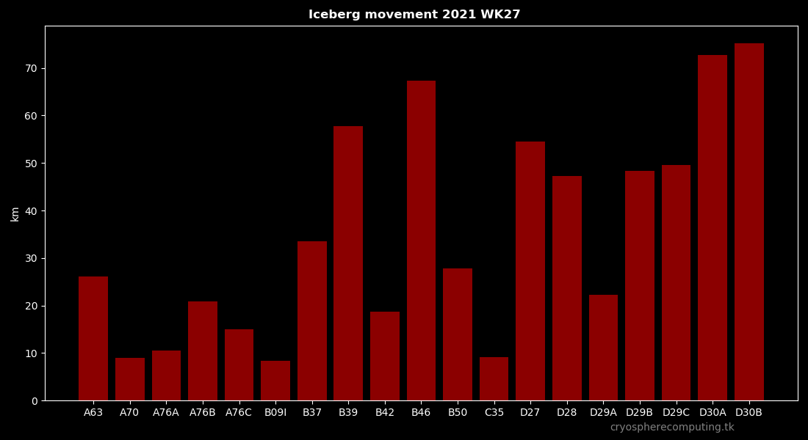

HOME
AMSR2 Snow & Ice Volume
Albedo-Warming Potential (AWP)
Arctic region
Arctic NRT
Antarctic
Antarctic region
Antarctic NRT
Ice Sheets
Greenland Bedrock
Antarctica Bedrock
Glacier Size
Analysis
Snow Covered Days
Ice Free Days
Past Ice Maps
Documentation
HOME
AMSR2 Snow & Ice Volume
Albedo-Warming Potential (AWP)
Arctic region
Arctic NRT
Antarctic
Antarctic region
Antarctic NRT
Analysis
Snow Covered Days
Ice Free Days
Past Ice Maps
Documentation
